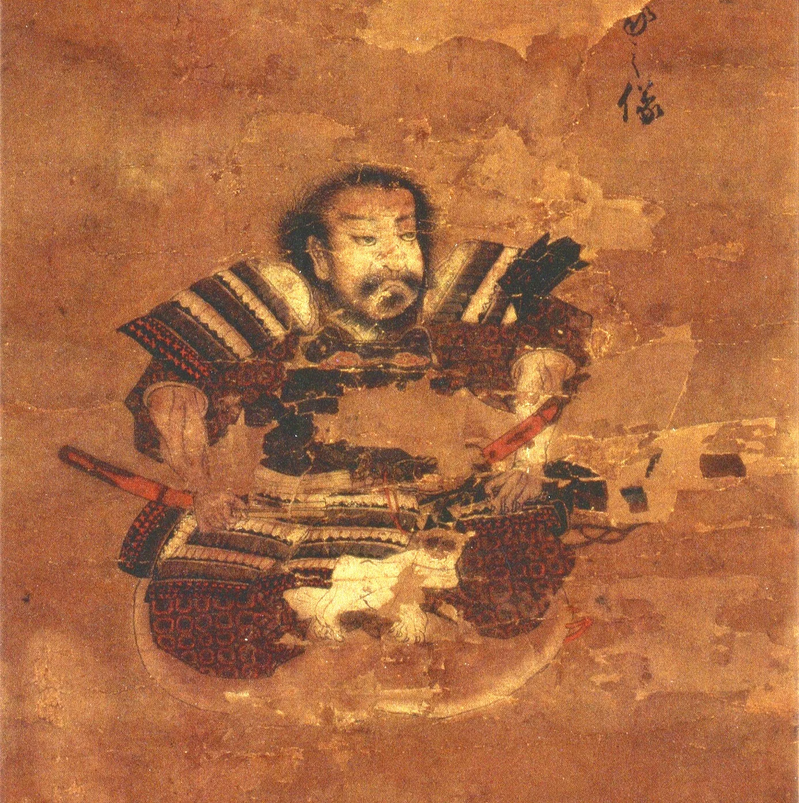

柴田勝家戦国編 其の十五
城にこもった戦いで、水がめを割って兵をふるい立たせたと伝わる男。
この人の一番の謎：「瓶割り柴田」とは？
生涯の要点
- 「瓶割り柴田」と呼ばれる逸話が伝わります
- はじめは信長の弟（信行）に仕え、信長と戦いました
- やがて信長に仕え、織田家の重臣になりました
- 越前（今の福井県）をまかされ、北ノ庄に城を築きました
- 本能寺の変のあと、信長の妹・お市の方と結婚しました
- 1583年、賤ヶ岳の戦いで羽柴秀吉に敗れました
- 北ノ庄城で、お市の方とともに自害しました
よくある疑問
「瓶割り柴田」とは？
城にこもって戦ったとき、残りの水がめを割って兵をふるい立たせたという話から来た呼び名です。後の世に伝わる逸話です。
同じころに亡くなった人

柴田勝家像（福井市立郷土歴史博物館『柴田勝家』2006年 所載）
60秒で見る
60秒の動画は
11月30日 20時に公開します
11月30日 20時に公開します
出典と画像
参考：コトバンク「柴田勝家」（日本大百科全書・改訂新版 世界大百科事典・デジタル版 日本人名大辞典+Plus）
肖像：柴田勝家像（福井市立郷土歴史博物館『柴田勝家』2006年 所載）／Wikimedia Commons／パブリックドメイン
写真：北ノ庄城址・柴田神社 撮影 先従隗始／Wikimedia Commons／CC0
動画のナレーション：VOICEVOX:青山龍星